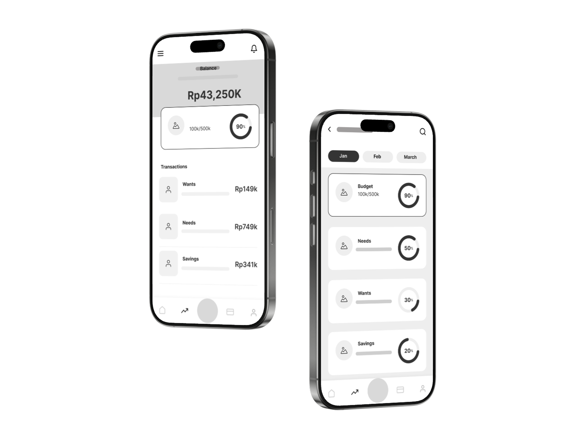

001 : Money Budget
Introducing Money Budget: Your Personal Finance Companion Managing your finances can be overwhelming, especially when it comes to tracking expenses, saving for goals, and resisting impulsive spending. The Money Budget app is designed to make budgeting simple, rewarding, and stress-free. With intuitive tools for setting budgets, monitoring your spending, and celebrating your savings milestones, Money Budget helps you take control of your financial journey. Whether you're saving for something special or just want to build better money habits, this app empowers you to make smarter decisions and feel good about your progress every step of the way.
"Budgeting has never been so fun. I can't believe I get rewarded for saving money."
Felicia Levana
Design Process
1.Problem Statement
"Struggling with impulsive spending and a lack of financial discipline, many individuals find it difficult to save money and often feel guilty after unnecessary purchases. My subject faced these challenges, frequently overspending and lacking a clear system to manage her finances. Without a structured approach, her savings goals remained out of reach, and spending rarely felt rewarding. The challenge was to find a solution that could transform her spending habits—helping her save consistently and allowing her to enjoy spending as a well-earned reward, rather than a source of regret."
2.Background Research
"During the background research phase, I conducted an in-depth interview with my subject to better understand her daily habits, motivations, and financial challenges. Through our conversation, I learned that she often felt anxious about her spending, struggled to keep track of where her money was going, and found it difficult to save for meaningful goals. She expressed frustration with her lack of control over impulsive purchases and a desire for a system that would make saving feel rewarding rather than restrictive. These insights helped me identify her core needs and pain points, guiding the design of a solution tailored to her unique financial journey."
3.Competitor Analysis
"For the competitor analysis, I explored a range of existing budgeting apps to identify their core features, strengths, and weaknesses. By examining popular solutions such as Mint, YNAB (You Need A Budget), and PocketGuard, I discovered that most apps offer essential tools like expense tracking, budgeting categories, and goal setting. However, each app has its own unique approach—some prioritize automation and ease of use, while others focus on detailed financial planning and user education. Despite their strengths, I noticed common pain points, such as overwhelming interfaces, limited personalization, and a lack of positive reinforcement for good financial habits. This analysis helped me pinpoint opportunities to design an app that not only addresses these shortcomings but also motivates users to save and spend more mindfully."
4.Ideate & Brainstorm
"During the ideation and brainstorming phase, I utilized the Crazy 8 technique to rapidly sketch out a variety of possible user flows and features. This creative exercise allowed me to quickly explore different ways to make the digital budgeting experience intuitive and engaging for my subject. By pushing beyond my initial ideas, I was able to identify innovative solutions that prioritized ease of use, clear navigation, and features that would directly address her needs—such as simple goal setting, visual progress tracking, and rewarding saving behaviors. The Crazy 8 process helped ensure that the final design would be both practical and enjoyable for users like her."
5.LO-FI Wireframes
"The low-fidelity wireframes were developed as a direct outcome of the Crazy 8 brainstorming session. Their primary purpose was to quickly test the proposed user flows and assess the overall ease of use of the app. By translating initial ideas into simple sketches, I was able to visualize the user journey and identify any potential pain points early in the design process. These wireframes served as a flexible foundation, allowing for rapid iteration and refinement based on feedback and further insights before moving on to high-fidelity designs."
5.high-fidelity Prototype
"After testing the prototype with my subject through a series of targeted tasks, I received valuable feedback and ultimately got the green light to move forward. With her approval, I shifted my focus to enhancing the visual appeal of the app, following Apple's Human Interface Guidelines to ensure a user-friendly and aesthetically pleasing experience. As I was building the app for iOS using Swift, this marked my very first time working with Xcode and Swift, which presented a new set of challenges. Despite the learning curve, I was able to translate the refined designs into a high-fidelity prototype within Xcode, bringing the concept to life and setting the stage for further development."

5.Conclusion
"This project was a transformative learning experience, taking me from the early stages of user-centered design all the way to hands-on app development. By deeply understanding my subject's needs, I was able to craft thoughtful solutions and iterate on my ideas through research, sketching, and prototyping. Transitioning from design to coding, I challenged myself to learn new tools like Xcode and Swift, turning concepts into a working product for the first time. This journey not only strengthened my design thinking and technical skills, but also gave me the confidence to tackle future projects that bridge creativity and technology. This is my beginning."